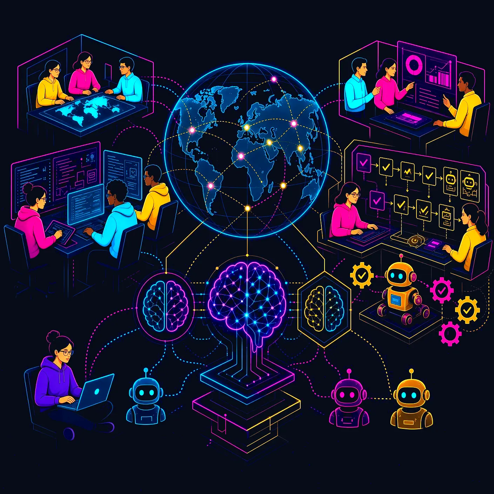

Выбираем процесс
Определяем владельца, текущую стоимость работы и критерии завершённой задачи.
Создаём ИИ-агентов для бизнес-процессов, подключаем их к вашим системам и готовим legacy-приложения к работе с ИИ.
AI AGENTS / INTEGRATION / MODERNIZATION
Автоматизируем процессы. Соединяем ИИ с данными и инструментами. Модернизируем системы, на которых держится ваш бизнес.
Разработка ИИ-агентов для поддержки, обработки документов и внутренних операций. Интеграции с CRM и ERP, контроль действий и оценка результата.
AI Integration Engineering: подключение моделей к приложениям, API и корпоративным данным. RAG, управление доступом, наблюдаемость и тестирование.
Подготовка legacy и .NET-систем к интеграции ИИ: API, доступ к данным, тестирование и поэтапная модернизация без обязательного полного переписывания.
Начинаем с ограниченного пилота. Проверяем качество, затраты и участие человека до расширения автоматизации.
Определяем владельца, текущую стоимость работы и критерии завершённой задачи.
Проверяем данные, API и права доступа. Описываем разрешённые действия и исключения.
Оцениваем сценарий на отдельной выборке. Измеряем качество, время и ручные исправления.
Подключаем журналирование, лимиты и мониторинг. Расширяем объём по результатам проверки.
Выбираем инструменты с учётом вашей инфраструктуры, нагрузки и возможностей команды.

Полезная автоматизация начинается с понятной задачи. Определяем доступ к данным, проверяем качество ответов и предусматриваем участие человека в важных действиях.
Практический бриф: цели, интеграции, качество и ограничения. Поможет сделать первую техническую встречу предметной.
Открыть руководство ↗С одного повторяемого процесса, владельца результата и набора примеров. До разработки нужно описать источники данных, разрешённые действия и критерии приёмки.
Интеграция создаёт связь модели с данными, приложением и инструментами. Агент использует эти связи для выполнения процесса. ИИ-функция может обходиться без агента, например при классификации документа.
Не обязательно. Часто достаточно ограниченного API, улучшения данных и изоляции нужного процесса. Решение зависит от технического состояния системы и требований к новому сценарию.
Сравните стоимость процесса до и после внедрения с учётом интеграции, API, сопровождения, ручных проверок и исправления ошибок. Экономия времени сама по себе ещё не означает снижение затрат.
Стоимость зависит от сложности процесса, числа интеграций, качества данных и требований к контролю. После первичного анализа можно отдельно оценить пилот и промышленное внедрение.
Новый продукт, сложная интеграция или система, которую пора обновить. Начнём с разговора.
contact@amaryllis.by ↗ул. Кальварийская 42-317,